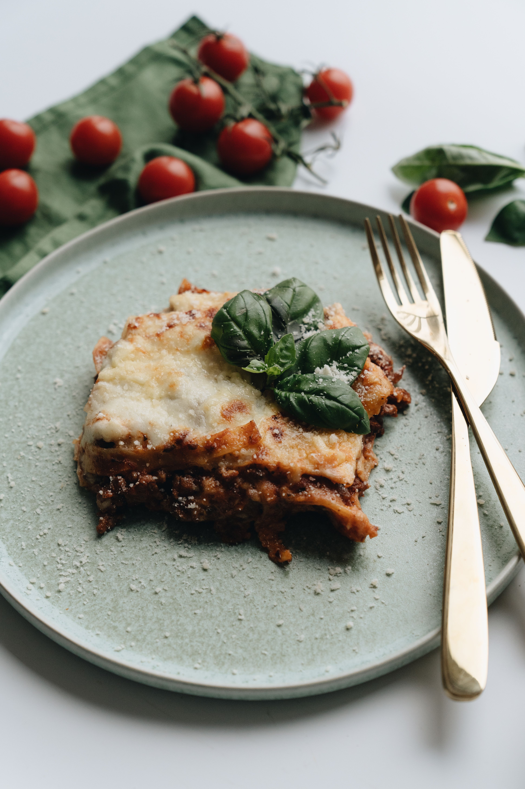

Lasagna

Delicious Baked Lasagna
A classic Italian dish featuring layers of pasta, rich meat sauce, and creamy cheese. This traditional lasagna is perfect for family dinners and can be prepared ahead of time for easy entertaining.
Ingrediants
- 450g ground beef
- 500g lasagna pasta sheets
- 680g ricotta cheese
- 200g shredded mozzarella
- 680g marinara sauce
Steps
- Preheat oven to 190°C
- Brown ground beef in a skillet over medium heat
- Cook lasagna sheets according to package directions and drain
- Spread thin layer of marinara sauce on bottom of 23x33cm baking dish
- Layer sheets, ricotta, mozzarella, and sauce, repeat until full
- End with sauce and mozzarella on top
- Bake covered for 25 minutes, then uncovered for 15 minutes until cheese is bubbly